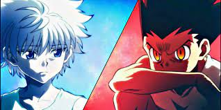

Hunters

A Hunter's job is not only that of looking for treasures and hunting animals. True Hunters dedicate themselves to the protection of knowledge, people, and nature. They must preserve culturally precious items or species of animals and plants they are able to discover. Furthermore, they must also arrest criminals and in rare cases even fellow Hunters who have committed heinous crimes. A "hunt" can range from a task commissioned by a client to one ordered by the higher-ups of the organization, to a quest a Hunter goes on of their own volition.